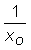
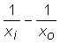
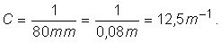
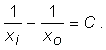

Provocarea 1
Provocarea 1
Găseşte regula care generează acest set de perechi de valori!
Un experiment de formare a imaginilor într−o lentilă convergentă (din trusa de optică), având înscrisă distanţa focală 80 mm, a condus la datele din tabelul 1.
Tabelul 1. Coordonate ale obiectului şi ale imaginii sale într−o lentilă convergentă cu distanţa focală 8 cm.
| xo (cm) |
xi (cm) |
Caracteristicile imaginii |
| -10,0 | 33,5 | răsturnată, mărită |
| -15,0 | 16,5 | răsturnată, mărită |
| -20,0 | 13,0 | răsturnată, micşorată |
| -25,0 | 12,0 | răsturnată, micşorată |
| -30,0 | 11,5 | răsturnată, micşorată |
| -35,0 | 11,0 | răsturnată, micşorată |
| -40,0 | 10,5 | răsturnată, micşorată |
| -45,0 | 10,2 | răsturnată, micşorată |
| -50,0 | 10,0 | răsturnată, micşorată |
Provocarea 1
Găseşte regula care generează acest set de perechi de valori!
Poţi remarca uşor că, pentru valori absolute mai mari ale coordonatei xo a obiectului, corespund valori din ce în ce mai mici ale coordonatei xi a imaginii.
Astfel, produsul coordonatelor ar putea avea şanse să fie constant.
Din păcate însă, valorile produsului coordonatelor diferă mult, între −335 cm2 (pentru prima pereche de valori) şi −500 cm2 (pentru ultima pereche).
Nici suma coordonatelor nu este contantă şi nici diferenţa acestora!
Se pare că regula care generează valorile din tabelul 1 nu este chiar atât de evidentă cât ne&minsu;am fi dorit.
Provocarea 2
Încearcă să găseşti o relaţie între inversele coordonatelor obiectului şi imaginii!
În tabelul 2 sunt prezentate valorile inverselor coordonatelor şi diferenţa acestor inverse.
Tabelul 2. Valorile inverselor coordonatelor şi diferenţa acestora.
|  (m-1) |
(m-1) |
 (m-1) |
| -10,0 | 3,0 | 13,0 |
| -6,7 | 6,1 | 12,8 |
| -5,0 | 7,7 | 12,7 |
| -4,0 | 8,3 | 12,3 |
| -3,3 | 8,7 | 12,0 |
| -2,9 | 9,1 | 12,0 |
| -2,5 | 9,5 | 12,0 |
| -2,2 | 9,8 | 12,0 |
| -2,0 | 10,0 | 12,0 |
Diferenţele inverselor coordonatelor este aproape constantă, diferind doar cu câteva procente în plus sau în minus faţă de valoare medie 12,3 m-1!
Provocarea 3
Cât este convergenţa lentilei pentru care au fost obţinute aceste valori?
Distanţa focală a lentilei este 80 mm. Aşadar, convergenţa sa este:

Diferenţa inverselor coordonatelor diferă de valoarea convergenţei lentilei cu mai puţin de două procente.
Ai obţinut astfel:

Formula lentilelor:

Această relaţie îţi permite să obţii, cu excelentă aproximaţie, una dintre mărimile implicate, dacă le cunoşti pe celelalte două.